Skanna och förstå tillsatser
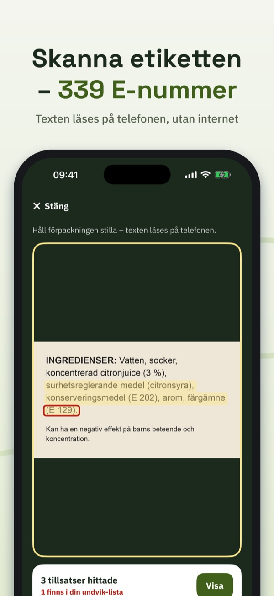
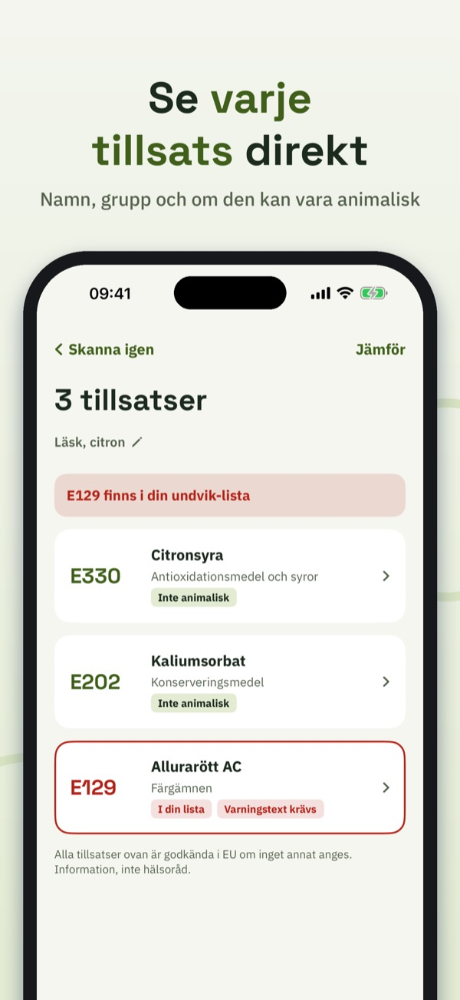
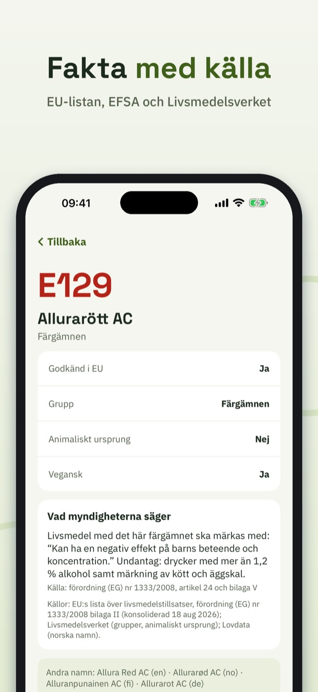
Vad är E 471? Och är E 120 veganskt? E-koll läser innehållsförteckningen med kameran och förklarar varje tillsats – lugnt, kort och med källa.
Rikta kameran mot ingredienserna. Texten läses direkt på din iPhone, även utan internet. E-koll hittar både E-nummer (E 330) och namn (citronsyra), även på norska, danska, finska, tyska och engelska. Ingen bild sparas eller skickas.
339 E-nummer från EU:s förordning om livsmedelstillsatser, med namn på sex språk, grupp och om tillsatsen kan vara av animaliskt ursprung. Där en myndighet säger något extra står det med källa: till exempel varningstexten för sex färgämnen, att titandioxid (E 171) inte längre är tillåtet i livsmedel och märkningsregler för sötningsmedel och sulfiter.
Sök på nummer eller namn på vilket språk som helst. Bläddra i sex grupper: färgämnen, konserveringsmedel, antioxidationsmedel och syror, förtjockningsmedel, sötningsmedel och övriga.
Välj de tillsatser du själv vill undvika – av egna skäl. Snabbval: färgämnen med varningstext, kan vara animaliskt, sötningsmedel, sulfiter, nitriter. Varje skanning markerar dem tydligt.
Ge skanningen ett namn och hitta den igen. Jämför två etiketter sida vid sida.
Korta guider: vad E betyder, hur en tillsats godkänns, hur man läser en innehållsförteckning, varningstexten om färgämnen och vegansk eller inte.
Utan köp: sök och fakta om alla tillsatser, grupper, guider och 5 skanningar per dag. E-koll Full (engångsköp, ingen prenumeration): obegränsade skanningar, undvik-lista, historik och jämförelse.
E-koll ger information, inte hälsoråd. Godkänd i EU är utgångspunkten. Appen är fristående och inte knuten till EU, EFSA eller någon livsmedelsmyndighet.
Användarvillkor (EULA): https://www.apple.com/legal/internet-services/itunes/dev/stdeula/
Integritet: https://baytechbv.github.io/privacy/enummer-nordic/
Skann innhold, forstå stoffene
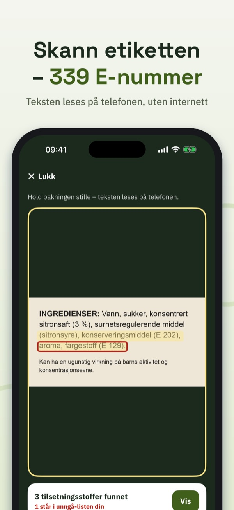
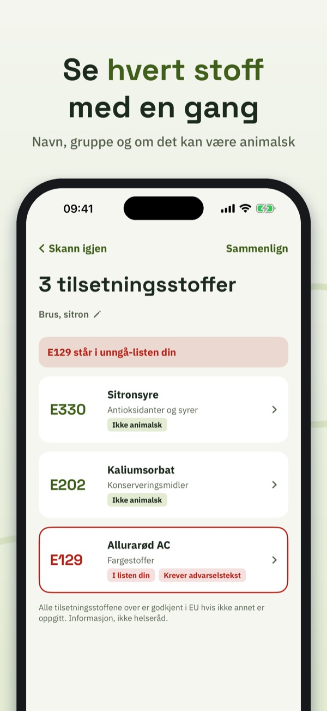
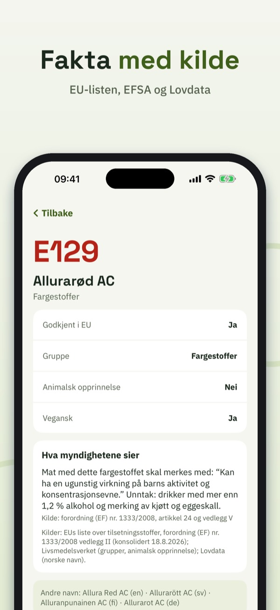
Hva er E 471? Og er E 120 vegansk? E-koll leser ingredienslisten med kameraet og forklarer hvert tilsetningsstoff – rolig, kort og med kilde.
Rett kameraet mot ingrediensene. Teksten leses direkte på iPhonen din, også uten internett. E-koll finner både E-nummer (E 330) og navn (sitronsyre), også på svensk, dansk, finsk, tysk og engelsk. Ingen bilder lagres eller sendes.
339 E-nummer fra EUs regelverk for tilsetningsstoffer, med navn på seks språk, gruppe og om stoffet kan være av animalsk opprinnelse. Norske navn fra forskrift om tilsetningsstoffer (Lovdata). Der en myndighet sier noe mer, står det med kilde: for eksempel advarselsteksten for seks fargestoffer, at titandioksid (E 171) ikke lenger er tillatt i mat, og merkereglene for søtstoffer og sulfitter.
Søk på nummer eller navn på hvilket språk som helst. Bla i seks grupper: fargestoffer, konserveringsmidler, antioksidanter og syrer, fortykningsmidler, søtstoffer og andre.
Velg stoffene du selv vil unngå – av egne grunner. Hurtigvalg: fargestoffer med advarselstekst, kan være animalsk, søtstoffer, sulfitter, nitritter. Hver skanning markerer dem tydelig.
Gi skanningen et navn og finn den igjen. Sammenlign to etiketter side om side.
Korte guider: hva E betyr, hvordan et tilsetningsstoff godkjennes, hvordan du leser en ingrediensliste, advarselsteksten om fargestoffer og vegansk eller ikke.
Uten kjøp: søk og fakta om alle stoffene, grupper, guider og 5 skanninger per dag. E-koll Full (engangskjøp, ikke abonnement): ubegrensede skanninger, unngå-liste, historikk og sammenligning.
E-koll gir informasjon, ikke helseråd. Godkjent i EU er utgangspunktet. Appen er uavhengig og ikke knyttet til EU, EFSA eller noen mattilsynsmyndighet.
Bruksvilkår (EULA): https://www.apple.com/legal/internet-services/itunes/dev/stdeula/
Personvern: https://baytechbv.github.io/privacy/enummer-nordic/
Scan indhold, forstå stofferne
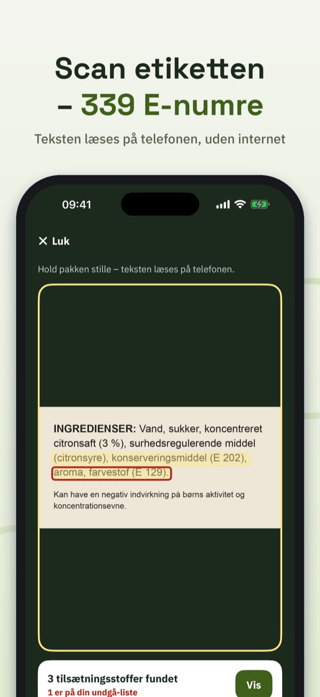
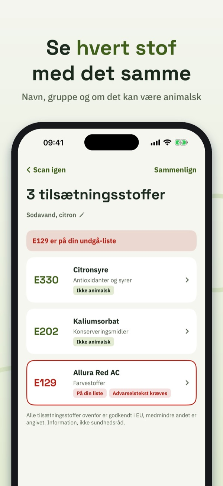
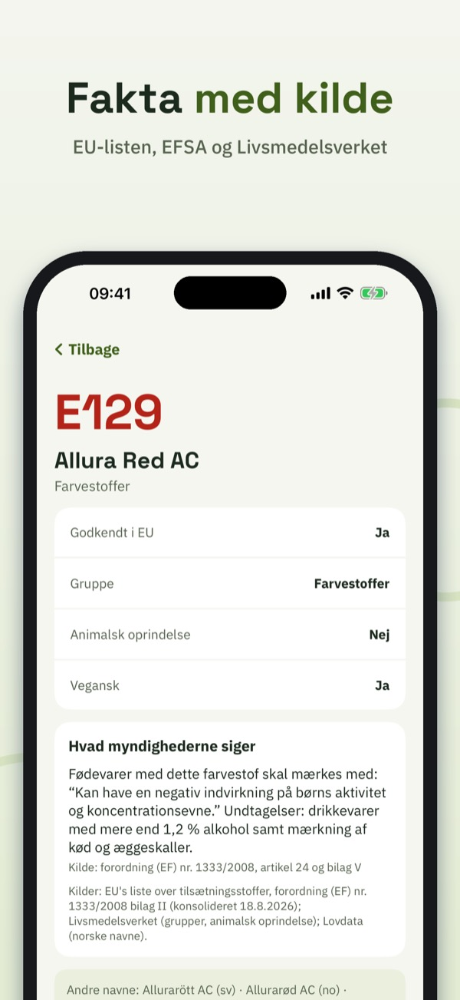
Hvad er E 471? Og er E 120 vegansk? E-tjek læser ingredienslisten med kameraet og forklarer hvert tilsætningsstof – roligt, kort og med kilde.
Ret kameraet mod ingredienserne. Teksten læses direkte på din iPhone, også uden internet. E-tjek finder både E-numre (E 330) og navne (citronsyre), også på svensk, norsk, finsk, tysk og engelsk. Ingen billeder gemmes eller sendes.
339 E-numre fra EU's forordning om tilsætningsstoffer, med navne på seks sprog, gruppe og om stoffet kan være af animalsk oprindelse. Hvor en myndighed siger mere, står det med kilde: for eksempel advarselsteksten for seks farvestoffer, at titandioxid (E 171) ikke længere er tilladt i fødevarer, og mærkningsreglerne for sødestoffer og sulfitter.
Søg på nummer eller navn på et hvilket som helst sprog. Bla i seks grupper: farvestoffer, konserveringsmidler, antioxidanter og syrer, fortykningsmidler, sødestoffer og andre.
Vælg de stoffer, du selv vil undgå – af egne grunde. Hurtigvalg: farvestoffer med advarselstekst, kan være animalsk, sødestoffer, sulfitter, nitritter. Hver scanning markerer dem tydeligt.
Giv scanningen et navn, og find den igen. Sammenlign to etiketter side om side.
Korte guider: hvad E betyder, hvordan et tilsætningsstof godkendes, hvordan man læser en ingrediensliste, advarselsteksten om farvestoffer og vegansk eller ej.
Uden køb: søgning og fakta om alle stoffer, grupper, guider og 5 scanninger om dagen. E-tjek Full (engangskøb, intet abonnement): ubegrænsede scanninger, undgå-liste, historik og sammenligning.
E-tjek giver information, ikke sundhedsråd. Godkendt i EU er udgangspunktet. Appen er uafhængig og ikke knyttet til EU, EFSA eller nogen fødevaremyndighed.
Brugsvilkår (EULA): https://www.apple.com/legal/internet-services/itunes/dev/stdeula/
Privatliv: https://baytechbv.github.io/privacy/enummer-nordic/
Skannaa ainesosat, ymmärrä
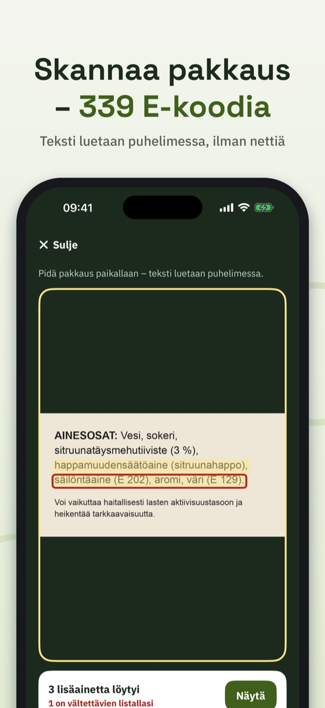
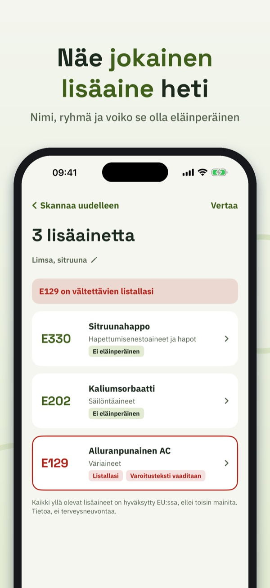
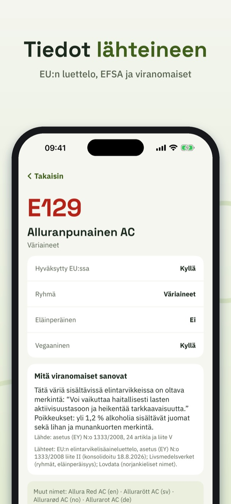
Mikä on E 471? Ja onko E 120 vegaaninen? E-koodit lukee ainesosaluettelon kameralla ja selittää jokaisen lisäaineen – rauhallisesti, lyhyesti ja lähteineen.
Osoita kameralla ainesosia. Teksti luetaan suoraan iPhonessasi, myös ilman nettiä. Sovellus löytää sekä E-koodit (E 330) että nimet (sitruunahappo), myös ruotsiksi, norjaksi, tanskaksi, saksaksi ja englanniksi. Kuvia ei tallenneta eikä lähetetä.
339 E-koodia EU:n elintarvikelisäaineasetuksesta, nimet kuudella kielellä, ryhmä ja tieto siitä, voiko lisäaine olla eläinperäinen. Kun viranomainen sanoo jotain lisää, se kerrotaan lähteineen: esimerkiksi kuuden väriaineen varoitusteksti, se että titaanidioksidi (E 171) ei ole enää sallittu elintarvikkeissa, sekä makeutusaineiden ja sulfiittien merkintäsäännöt.
Hae numerolla tai nimellä millä tahansa kielellä. Selaa kuutta ryhmää: väriaineet, säilöntäaineet, antioksidantit ja hapot, sakeuttamisaineet, makeutusaineet ja muut.
Valitse lisäaineet, joita itse haluat välttää – omista syistäsi. Pikavalinnat: varoitustekstin väriaineet, voi olla eläinperäinen, makeutusaineet, sulfiitit, nitriitit. Jokainen skannaus merkitsee ne selvästi.
Anna skannaukselle nimi ja löydä se myöhemmin. Vertaa kahta pakkausta rinnakkain.
Lyhyet oppaat: mitä E tarkoittaa, miten lisäaine hyväksytään, miten ainesosaluettelo luetaan, väriaineiden varoitusteksti ja vegaaninen vai ei.
Ilman ostoa: haku ja tiedot kaikista lisäaineista, ryhmät, oppaat ja 5 skannausta päivässä. E-koodit Full (kertaosto, ei tilausta): rajattomasti skannauksia, vältettävien lista, historia ja vertailu.
Sovellus antaa tietoa, ei terveysneuvoja. Lähtökohta on EU:n hyväksyntä. Sovellus on itsenäinen eikä liity EU:hun, EFSAan tai mihinkään elintarvikeviranomaiseen.
Käyttöehdot (EULA): https://www.apple.com/legal/internet-services/itunes/dev/stdeula/
Tietosuoja: https://baytechbv.github.io/privacy/enummer-nordic/
Zutaten scannen & verstehen
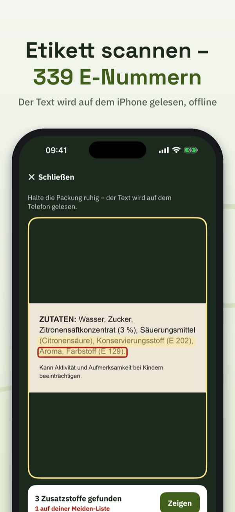
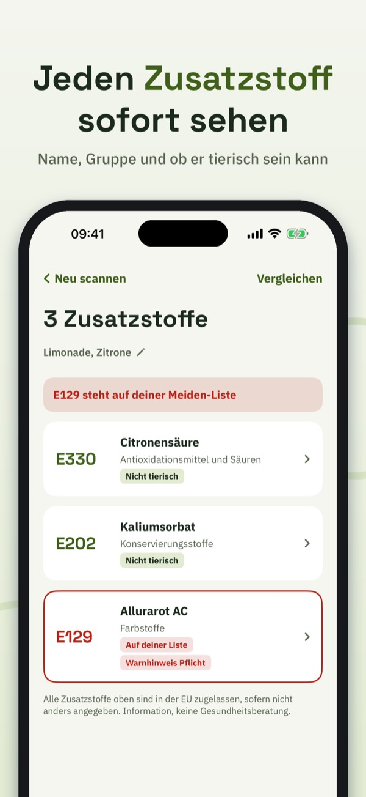
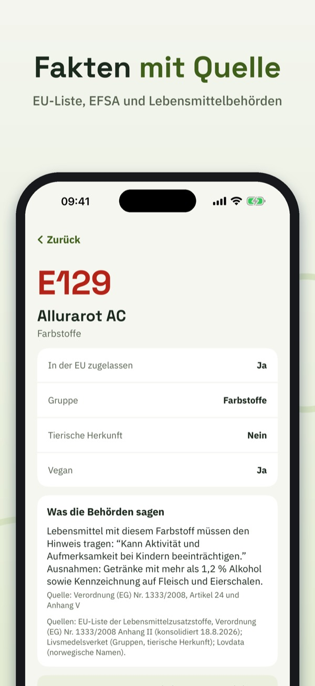
Was ist E 471? Und ist E 120 vegan? E-Check liest die Zutatenliste mit der Kamera und erklärt jeden Zusatzstoff – ruhig, kurz und mit Quelle.
Kamera auf die Zutaten halten. Der Text wird direkt auf deinem iPhone gelesen, auch ohne Internet. E-Check findet E-Nummern (E 330) und Namen (Citronensäure), auch auf Schwedisch, Norwegisch, Dänisch, Finnisch und Englisch. Es wird kein Bild gespeichert oder gesendet.
339 E-Nummern aus der EU-Verordnung über Lebensmittelzusatzstoffe, mit Namen in sechs Sprachen, Gruppe und ob der Stoff tierischen Ursprungs sein kann. Wo eine Behörde mehr sagt, steht es mit Quelle da: zum Beispiel der Warnhinweis für sechs Farbstoffe, dass Titandioxid (E 171) in Lebensmitteln nicht mehr erlaubt ist, und die Kennzeichnungsregeln für Süßungsmittel und Sulfite.
Suche nach Nummer oder Name in jeder Sprache. Stöbere in sechs Gruppen: Farbstoffe, Konservierungsstoffe, Antioxidationsmittel und Säuren, Verdickungsmittel, Süßungsmittel und weitere.
Wähle die Zusatzstoffe, die du selbst meiden möchtest – aus eigenen Gründen. Schnellauswahl: Farbstoffe mit Warnhinweis, kann tierisch sein, Süßungsmittel, Sulfite, Nitrite. Jeder Scan markiert sie deutlich.
Gib dem Scan einen Namen und finde ihn wieder. Vergleiche zwei Etiketten nebeneinander.
Kurze Ratgeber: was das E bedeutet, wie ein Zusatzstoff zugelassen wird, wie man eine Zutatenliste liest, der Warnhinweis zu Farbstoffen und vegan oder nicht.
Ohne Kauf: Suche und Fakten zu allen Zusatzstoffen, Gruppen, Ratgeber und 5 Scans pro Tag. E-Check Full (Einmalkauf, kein Abo): unbegrenzte Scans, Meiden-Liste, Verlauf und Vergleich.
E-Check gibt Informationen, keine Gesundheitsberatung. In der EU zugelassen ist der Ausgangspunkt. Die App ist unabhängig und nicht mit der EU, der EFSA oder einer Lebensmittelbehörde verbunden.
Nutzungsbedingungen (EULA): https://www.apple.com/legal/internet-services/itunes/dev/stdeula/
Datenschutz: https://baytechbv.github.io/privacy/enummer-nordic/
Scan labels, know additives
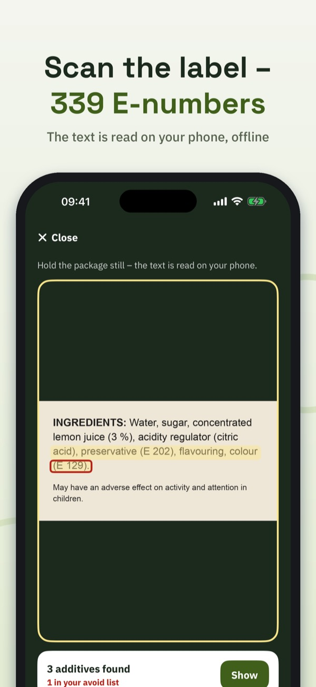
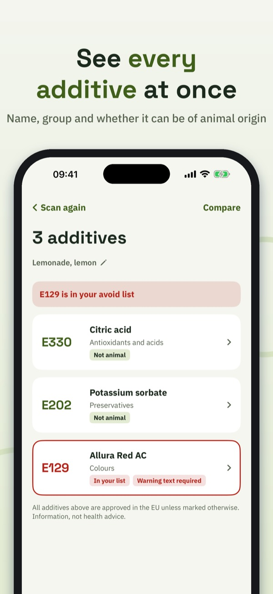
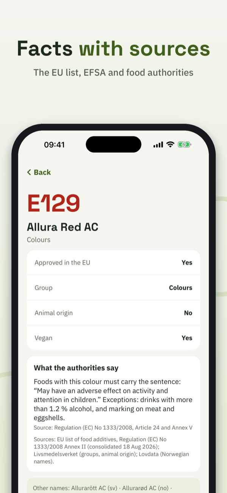
What is E 471? Is E 120 vegan? E-koll reads the ingredients list with the camera and explains every additive – calmly, briefly and with a source.
Point the camera at the ingredients. The text is read on your iPhone, even without internet. E-koll finds E-numbers (E 330) and names (citric acid) in Swedish, Norwegian, Danish, Finnish, German and English. No image is saved or sent.
339 E-numbers from the EU regulation on food additives, with names in six languages, group and whether the additive can be of animal origin. Where an authority says more, it is shown with its source: for example the warning sentence for six colours, that titanium dioxide (E 171) is no longer allowed in food, and the labelling rules for sweeteners and sulphites.
Search by number or name in any language. Browse six groups: colours, preservatives, antioxidants and acids, thickeners and emulsifiers, sweeteners and others.
Pick the additives you want to avoid – for your own reasons. Quick picks: colours with a warning, may be of animal origin, sweeteners, sulphites, nitrites. Every scan marks them clearly.
Name a scan and find it again. Compare two labels side by side.
Short guides: what the E means, how an additive is approved, how to read an ingredients list, the colour warning and vegan or not.
Without a purchase: search and facts on every additive, groups, guides and 5 scans a day. E-koll Full (one-time purchase, no subscription): unlimited scans, avoid list, history and comparison.
E-koll gives information, not health advice. Approved in the EU is the starting point. The app is independent and not affiliated with the EU, EFSA or any food authority.
Terms of Use (EULA): https://www.apple.com/legal/internet-services/itunes/dev/stdeula/
Privacy: https://baytechbv.github.io/privacy/enummer-nordic/